สรุปการดำเนินงาน เปรียบเทียบสถิติการใช้งาน และพฤติกรรมการบันทึกข้อมูล ระหว่างวันที่ 1 - 30 กันยายน 2569 และ 1 - 9 ตุลาคม 2569
เปรียบเทียบจำนวนการสร้าง Exam Card ระหว่างรอบเดือนกันยายน (30 วัน) และช่วงต้นเดือนตุลาคม (9 วัน)
| ช่วงเวลาบันทึก | จำนวนวัน | จำนวน Exam Card (รายการ) | อัตราเฉลี่ยต่อวัน | สถานะเทียบกับเดือนก่อน |
|---|---|---|---|---|
| 1 - 30 กันยายน 2569 | 30 วัน | 2,927 | ~97.57 รายการ/วัน | เกณฑ์มาตรฐาน |
| 1 - 9 ตุลาคม 2569 | 9 วัน | 902 | ~100.22 รายการ/วัน | +2.7% (เฉลี่ยต่อวันเพิ่มขึ้น) |
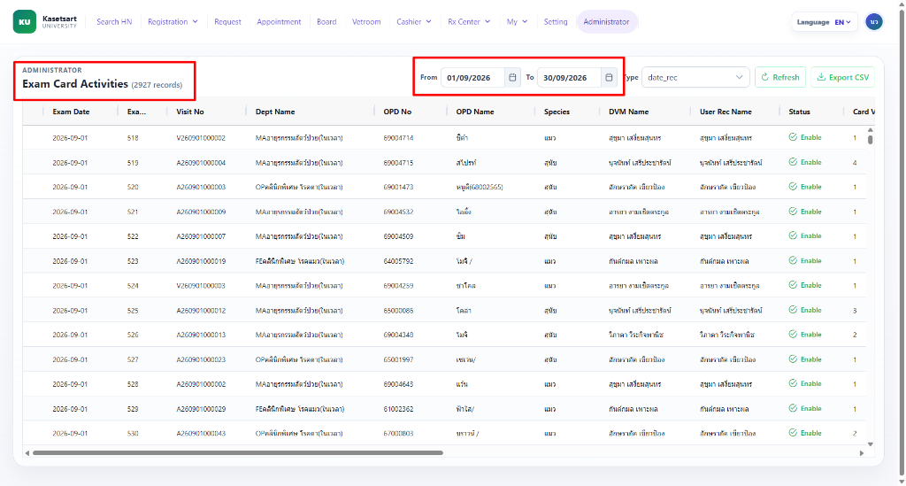
รวม 2,927 รายการ
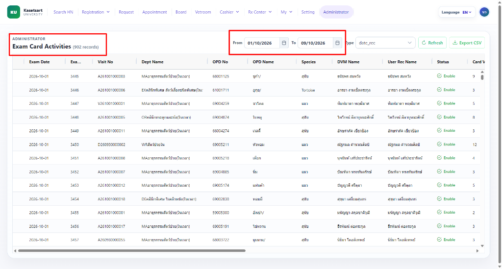
รวม 902 รายการ
วิเคราะห์ปริมาณการเข้ารับบริการผ่านจุดลงทะเบียน และผลสัมฤทธิ์ของการบังคับใช้รหัสคิวในการเรียกเข้ารับบริการ
| ช่วงเวลา | จำนวน Check-in รวม | มีรหัสคิว (With Queue) | ไม่มีรหัสคิว (No Queue) |
|---|---|---|---|
| 1 - 30 ก.ย. 2569 | 3,065 รายการ | 3,009 รายการ | 56 รายการ |
| 1 - 9 ต.ค. 2569 | 954 รายการ | 954 รายการ | 0 รายการ (100% Queue) |
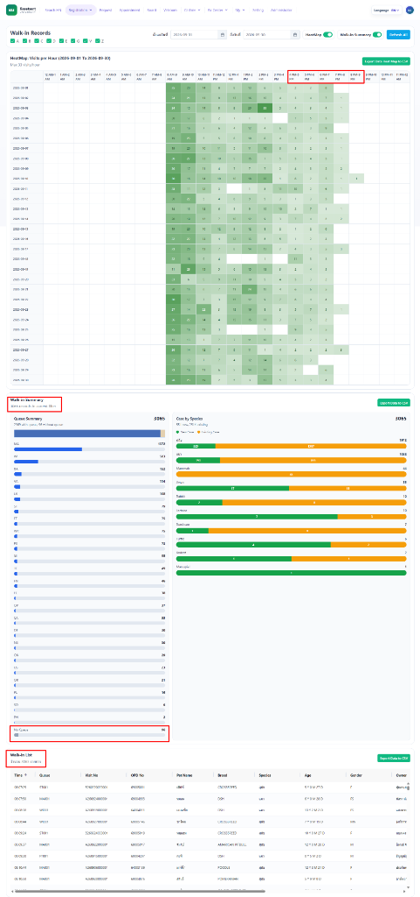
รวม 3,065 รายการ
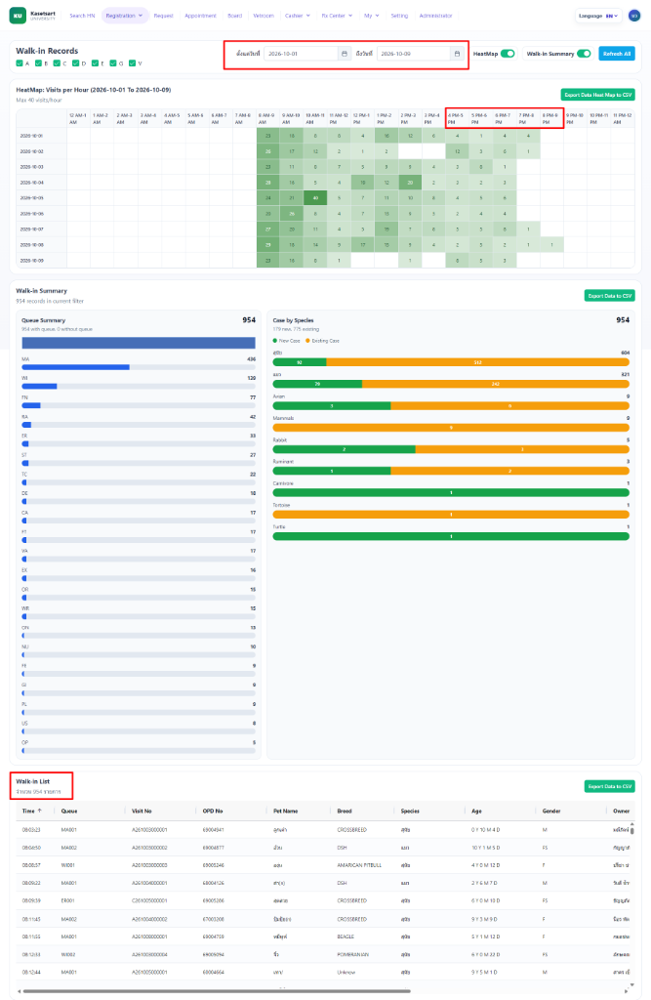
รวม 954 รายการ
ติดตามปริมาณการสแกนแนบไฟล์เวชระเบียนภายนอก เอกสารส่งตัว และใบตรวจเฉพาะทางเข้าสู่ระบบ
| ช่วงเวลา | จำนวนการสแกน | เอกสารสำคัญที่ตรวจพบจากการสำรวจ |
|---|---|---|
| 1 - 30 ก.ย. 2569 | 850 รายการ | ใบตรวจอายุรกรรม, ใบอนุญาตให้รักษาสัตว์, เอกสารส่งต่อจาก รพส.อื่น, ผลตรวจ Lab |
| 1 - 9 ต.ค. 2569 | 50 รายการ |
• MA ใบตรวจอายุรกรรม: 2 ใบ • ตรวจระบบประสาท: 4 ใบ (ข้อสังเกต: ตรวจสอบว่าเป็นใบตรวจเสริมหรือใบตรวจหลัก) • ST ศัลยกรรมเนื้อเยื่ออ่อน: 9 ใบ • CA ใบตรวจคลินิกพิเศษโรคหัวใจ: 3 ใบ • ใบบันทึกอาการสัตว์ป่วยใน: 3 ใบ • บัตรประชาชน: ยังตรวจพบการถ่ายภาพ/สแกนบัตรประชาชนแนบในระบบ |
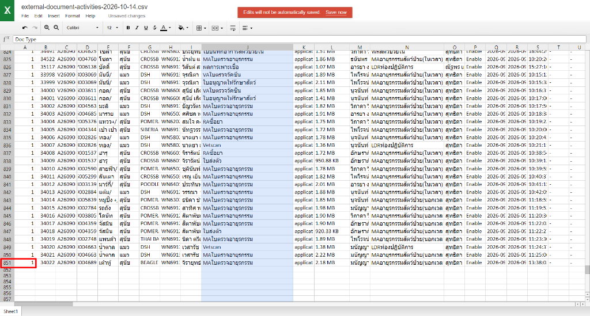
รวม 850 รายการ
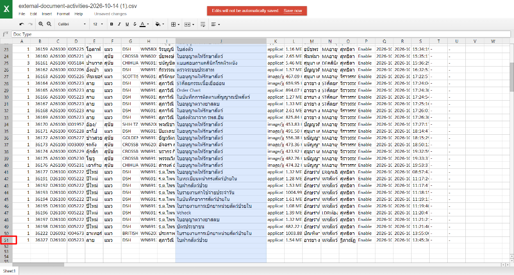
รวม 50 รายการ
การบันทึกรายการปัญหาและการประเมินตามมาตรฐาน Problem-Oriented Medical Record (POMR)
| ช่วงเวลา | จำนวนรายการประเมิน (Activities) | อัตราเฉลี่ยต่อวัน | สัดส่วนเทียบกับ Exam Card |
|---|---|---|---|
| 1 - 30 ก.ย. 2569 | 3,676 รายการ | ~122.53 รายการ/วัน | ~1.26 ปัญหาต่อ 1 Exam Card |
| 1 - 9 ต.ค. 2569 | 1,168 รายการ | ~129.78 รายการ/วัน | ~1.29 ปัญหาต่อ 1 Exam Card |
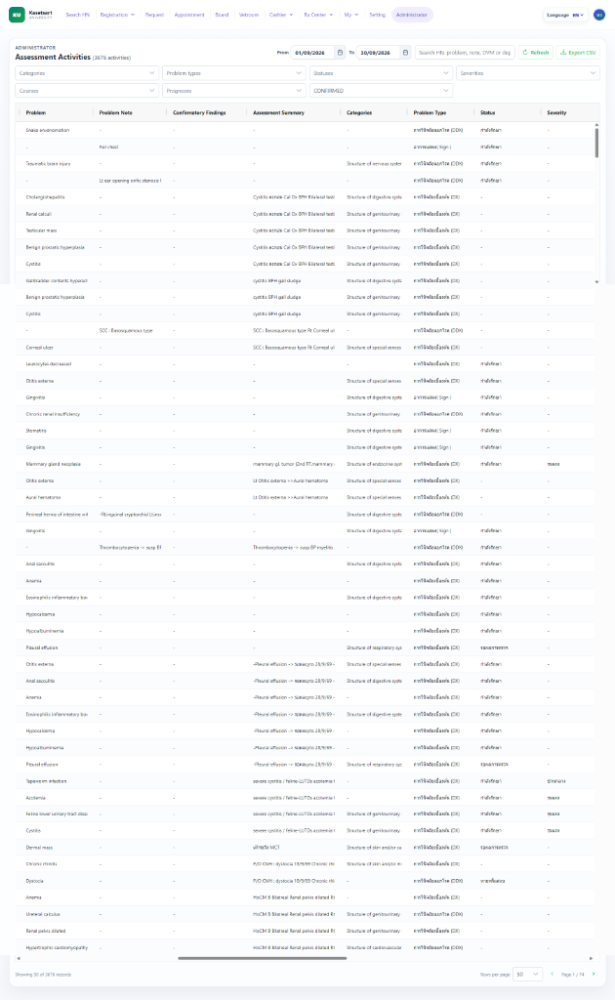
รวม 3,676 รายการ
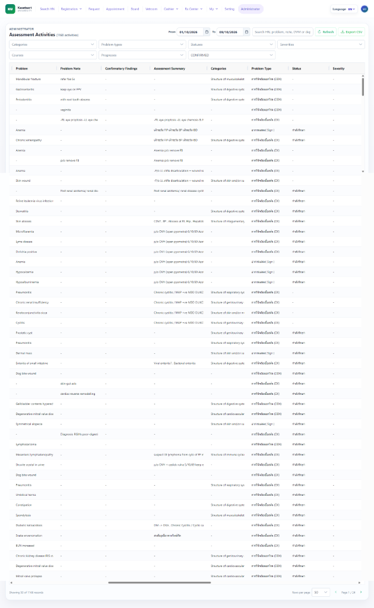
รวม 1,168 รายการ
บันทึกสัญญาณชีพพื้นฐาน (VPE v2) และตัวอย่างรายละเอียดหน้าต่าง Vital Sign Submission Detail
| ช่วงเวลา | จำนวนบันทึก (ครั้ง) | สัดส่วนเทียบกับ Exam Card | พารามิเตอร์สำคัญที่มีการจัดเก็บในระบบ |
|---|---|---|---|
| 1 - 30 ก.ย. 2569 | 2,389 ครั้ง | 81.62% (2,389 จาก 2,927 เคส) | Temp, Weight, CRT, Mucous Membrane (Color/Site), Lung/Airway Sounds, Mentation (BAR), Reaction to Stimuli |
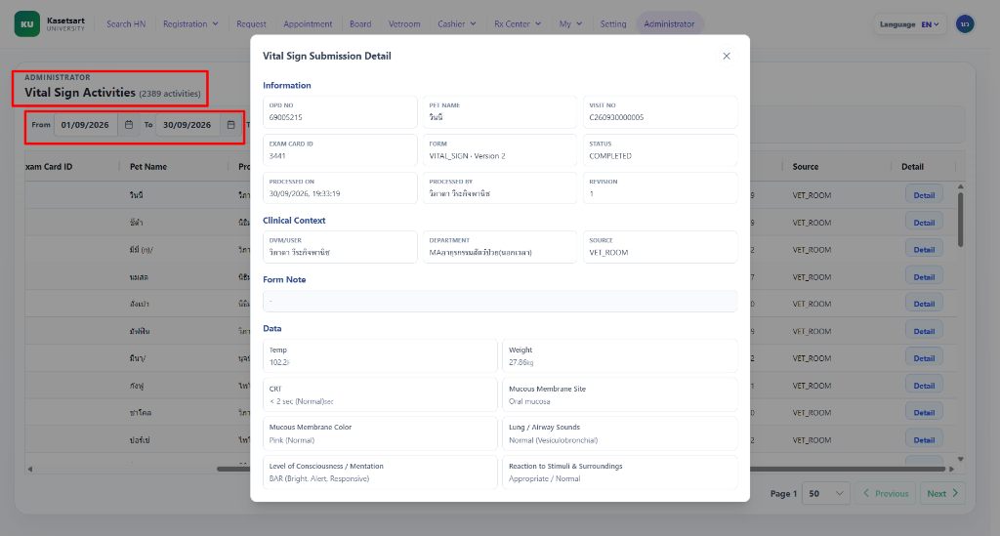
รวม 2,389 รายการ
ระบบบันทึกแผนการรักษาพร้อมกลไก Audit Trail ติดตามทุกการแก้ไข (Revision Tracking)
| ช่วงเวลา | จำนวนแผนการรักษา (รายการ) | อัตราเฉลี่ยต่อวัน | คุณสมบัติระบบความปลอดภัยและการตรวจสอบ (Audit Trail) |
|---|---|---|---|
| 1 - 30 ก.ย. 2569 | 1,247 รายการ | ~41.57 รายการ/วัน |
• Revision Versioning: แยกชัดเจนระหว่าง Revision 1, Revision 2 • Time & User Attribution: ระบุชื่อ DVM ผู้แก้ไขและ Timestamp ละเอียดระดับวินาที • Status History: ติดตามสถานะตั้งแต่ CREATED · PLAN จนถึงการปรับเปลี่ยนคำสั่ง |
| 1 - 9 ต.ค. 2569 | 338 รายการ | ~37.56 รายการ/วัน |
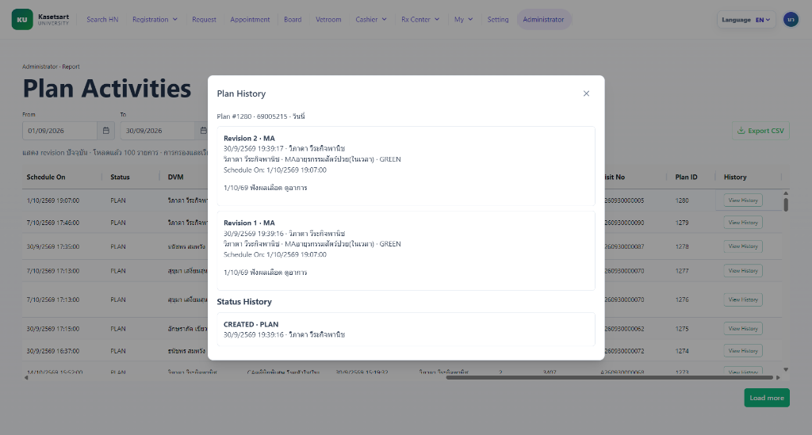
รวม 1,247 รายการ (1 - 30 ก.ย.) และ 338 รายการ (1 - 9 ต.ค.)
ระบบบันทึกความปลอดภัยของสัตว์ป่วย เช่น การแพ้ยา/ผลิตภัณฑ์ พร้อมประวัติการสร้างและแก้ไขย้อนหลัง
| หัวข้อการบันทึก | ตัวอย่างการใช้งานจริง | ระดับความสำคัญ (Level) | การรักษาความปลอดภัย (Patient Safety) |
|---|---|---|---|
| ประวัติการแพ้ยา / แพ้ผลิตภัณฑ์ | แพ้ Epi-otic 24/8/26 ใช้แล้วตาบวม |
HIGH | แสดงเตือนทันทีเมื่อเปิดเคส ป้องกันการจ่ายยาซ้ำ |
| บันทึกพฤติกรรม / ข้อควรระวังทั่วไป | การจัดการพิเศษระหว่างตรวจ, นิสัยสัตว์ป่วย | LOW | ช่วยทีมสัตวแพทย์และผู้ช่วยเตรียมความพร้อม |
Revision 1 · CREATE ระบุวัน-เวลา และชื่อสัตวแพทย์ผู้บันทึกอย่างชัดเจน ช่วยให้การปรับปรุงข้อมูลประวัติการแพ้ยามีความโปร่งใสและตรวจสอบความถูกต้องได้อย่างรัดกุม
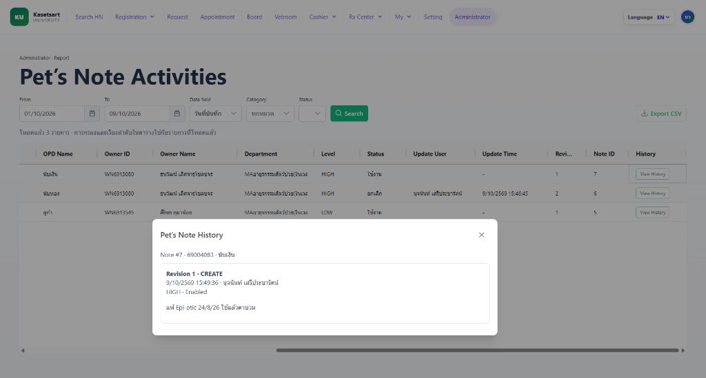
รวม 3 รายการ